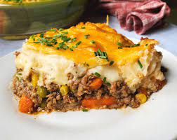

Shepherd's Pie

Shepherd's Pie
Shepherd's Pie is a traditionally Irish Dish. It is usually made with ground
lamb but for convenience sake it can be made with ground beef. Aside from beef
or lamb a filling of mash potatoes is usually put on top of the meat. The meat is
also mixed with mixed vegetables such as corn, peas and carrots.
Ingredients
Meat Fillings:
- 2 tablespoons olive oil
- 1 cup chopped yellow onions
- 1 lb. 90% lean ground beef or ground lamb
- 2 teaspoons dried parsley leaves
- 1 teaspoon dried rosemary leaves
- 1 teaspoon dried thyme leaves
- 1/2 teaspoon salt
- 1/2 teaspoon ground black pepper
- 1 tablespoon Worcestershire sauce
- 2 garlic cloves -minced
- 2 tablespoons all purpose flour
- 2 tablespoons tomato paste
- 1 cup beef broth
- 1 cup frozen mixed peas & carrots
- 1/2 cup frozen corn kernels
Potato Topping:
- 1 1/2 - 2 lb. russet potatoes
- 8 tablespoons unsalted butte
- 1/3 cup half & half
- 1/2 teaspoon garlic powder
- 1/2 teaspoon salt
- 1/4 teaspoon ground black pepper
- 1/4 cup parmesan cheese
Instructions
Make the Meat Filling.
- Add the oil to a large skillet and place it
over medium-high heat for 2 minutes.
Add the onions. Cook 5 minutes,
stirring occasionally.
- Add the ground beef (or ground lamb)
to the skillet and break it apart with a
wooden spoon. Add the parsley,
rosemary, thyme, salt, and and pepper.
Stir well. Cook for 6-8 minutes, until the meat
is browned, stirring occasionally.
- Add the Worcestershire sauce and garlic. Stir
to combine. Cook for 1 minute.
- Add the flour and tomato paste. Stir until well
incorporated and no clumps of tomato paste remain.
- Add the broth, frozen peas and carrots, and frozen corn. Bring the liquid to a boil
then reduce to simmer. Simmer for 5 minutes, stirring occasionally.
- Set the meat mixture aside. Preheat oven to 400 degrees F.
Make the potato topping
- Place the potatoes in a large pot. Cover the potatoes with water. Bring the water to
a boil. Reduce to a simmer. Cook until potatoes are fork tender, 10-15 minutes.
- Drain the potatoes in a colander. Return the potatoes to the hot pot. Let the
potatoes rest in the hot pot for 1 minute to evaporate any remaining liquid.
- Add butter, half & half, garlic powder, salt, and pepper. Mash the potatoes and stir
until all the ingredients are mixed together.
- Add the parmesan cheese to the potatoes. Stir until well combined.
- Pour the meat mixture into a 9x9 (or 7x11) inch baking dish. Spread it out into an
even layer. Spoon the mashed potatoes on top of the meat. Carefully spread into
an even layer.
- If the baking dish looks very full, place it on a rimmed baking sheet so that the
filling doesn’t bubble over into your oven. Bake uncovered for 25-30 minutes.** Cool
for 15 minutes before serving.
Return to Main page